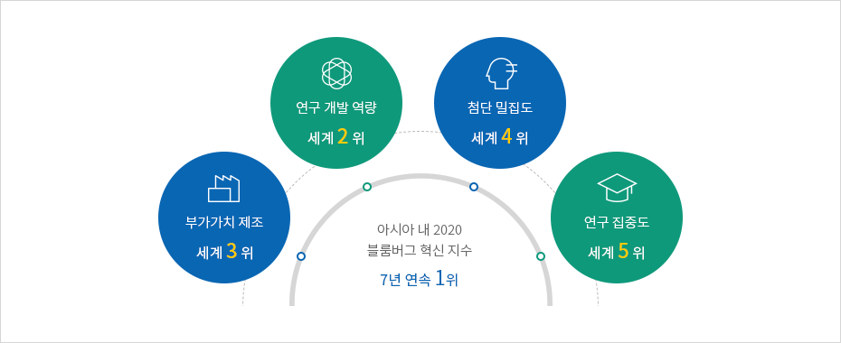
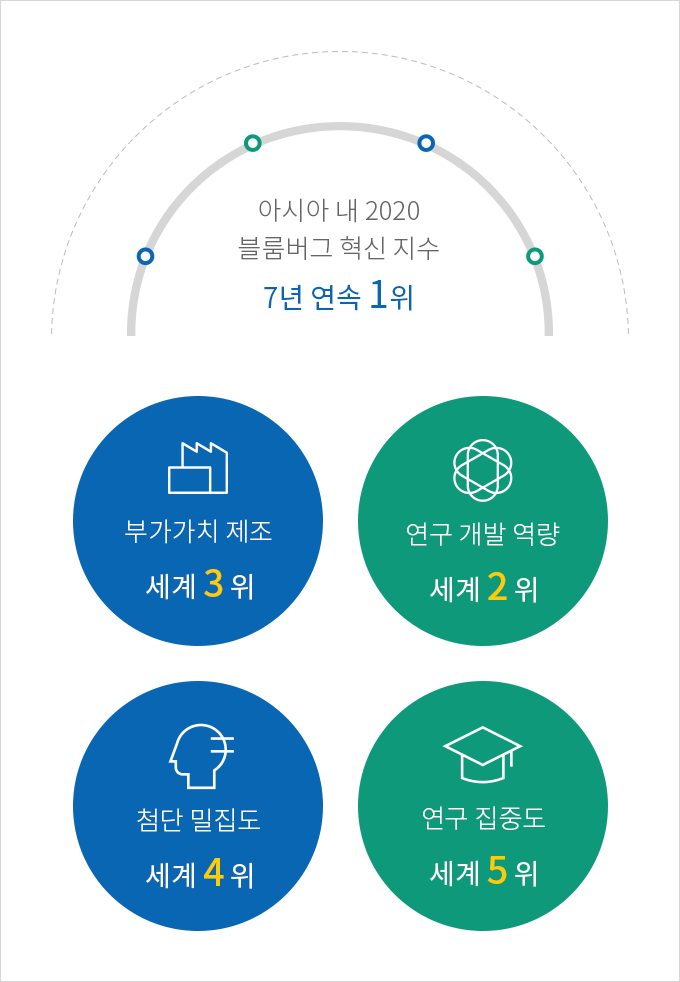
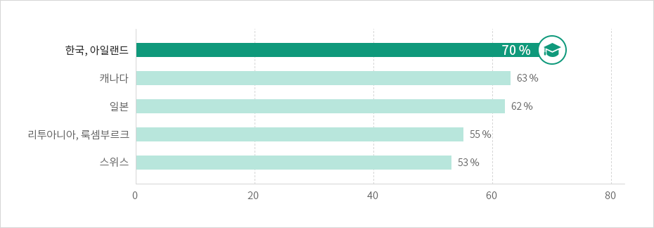
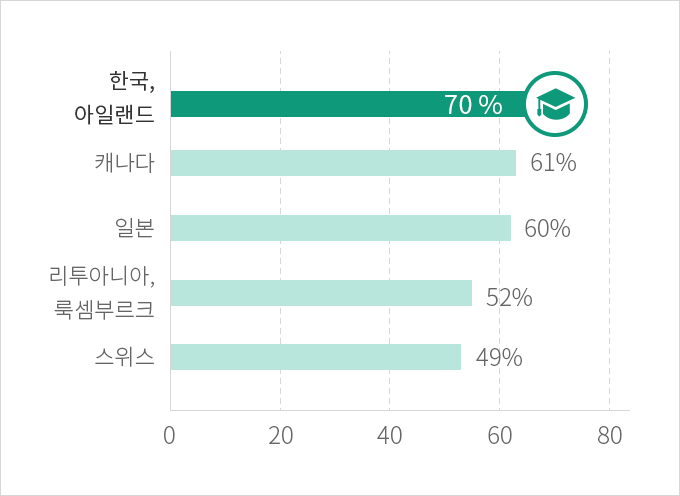

혁신
- Home
- Why KOREA
- 인프라
- 혁신
아시아 최고 혁신 국가
한국은 블룸버그 혁신지수 7년 연속 아시아 1위에 빛나는 혁신적인 국가이며, 2020년 기준 전 세계 2위를 기록하고 있다.
연구 개발 역량, 부가가치 제조, 첨단 밀집도, 연구 집중도 모두 전 세계에서 상위 5위 이내에 위치하고 있으며, 이러한 혁신 인프라는 수많은 글로벌 기업들이 한국에 투자하는 주요 요인 중 하나이다.
연구 개발 역량, 부가가치 제조, 첨단 밀집도, 연구 집중도 모두 전 세계에서 상위 5위 이내에 위치하고 있으며, 이러한 혁신 인프라는 수많은 글로벌 기업들이 한국에 투자하는 주요 요인 중 하나이다.



아시아 내 2020 블룸버그 혁신 지수 7년 연속 1위
- 부가가치 제조 세계 3위
- 연구 개발 역량 세계 2위
- 첨단 밀집도 세계 4위
- 연구 집중도 세계 5위

※ 출처 : Bloomberg (January 2020)
혁신 DNA를 지닌 고급 인력
한국이 지난 반 세기 동안 비약적인 경제 성장을 이룬 배경에는 한국인 특유의 성실함, 책임감, 유연함이 있다.
청년층의 대학교육 이수율은 OECD 국가 중 가장 높은 수치를 나타내고 있다.
한국의 가장 중요한 자원은 바로 ‘사람＇이며, 이를 통해 한국의 혁신이 지속된다고 할 수 있다.
25 ~ 34세 대학 졸업자 비율 OECD 상위 5개국
청년층의 대학교육 이수율은 OECD 국가 중 가장 높은 수치를 나타내고 있다.
한국의 가장 중요한 자원은 바로 ‘사람＇이며, 이를 통해 한국의 혁신이 지속된다고 할 수 있다.



※ 출처 : OECD, Education at a glance 2020(2020.09.08)